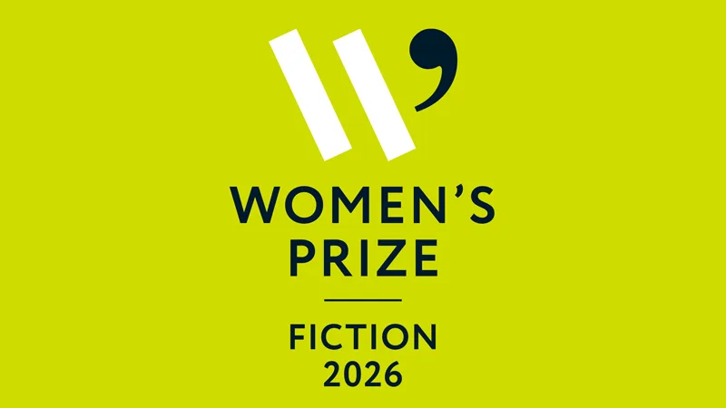

Predicting the 2026 Women’s Prize for Fiction Shortlist: Six to Watch
The shortlist drops on 22 April. Thirty years on, my six predicted survivors and one writer’s pick for the 11 June winner.

The Women’s Prize for Fiction turns thirty this year.
It was founded in 1996, the result of a now-famous editorial meeting where a group of women in publishing looked at the 1991 Booker Prize shortlist, noticed that not one of the six books was by a woman despite the fact that women had written roughly sixty per cent of the novels published in the UK that year, and decided that something had to give. They started a prize. They funded it themselves at first. Three decades later it has outlasted most of the publishing imprints that gave it a sceptical eye in 1996, and a good case can be made that it has become more reliably predictive of which novels will actually endure than the main Booker is.
Look at the past ten winners. Maggie O’Farrell’s Hamnet. Barbara Kingsolver’s Demon Copperhead. Tayari Jones, Susanna Clarke, Ruth Ozeki, V. V. Ganeshananthan, Yael van der Wouden’s The Safekeep last year. These are novels that people are still reading and pressing into other people’s hands a decade later. The main Booker has Bernardine Evaristo and Shehan Karunatilaka and a few others, but it also has a longer list of winners that have quietly drifted out of the conversation. The Women’s Prize has fewer drifters. That is not an accident.
The 2026 longlist of sixteen books was announced on 4 March, judged by a panel chaired by former Australian Prime Minister Julia Gillard. The shortlist drops on Wednesday 22 April, six survivors from sixteen, and the winner is announced on Thursday 11 June at Bedford Square Gardens in London. Nine of the sixteen longlisted writers are debuts, more than half are from independent publishers, and seven are American. Two of them, Susan Choi and Katie Kitamura, were also shortlisted for last year’s main Booker Prize, which gives the 2026 Women’s Prize an interesting cross-prize narrative most coverage will miss.
I have read or read about all sixteen. Here are the six I think will make the shortlist on 22 April.
My six predictions
Flashlight by Susan Choi
This one is the safest pick on the board. Choi is a National Book Award winner and Flashlight was already shortlisted for the 2025 Booker Prize. A multi-decade family drama that opens with a missing father on a Japanese beach and unspools across continents, it has the structural ambition the Women’s Prize tends to reward. Gillard called the writing “luminous” in her chair’s notes. A shortlist place is almost guaranteed.
Audition by Katie Kitamura
Kitamura was the other Booker shortlistee on this longlist. Audition is the kind of compressed psychological novel she has been quietly perfecting since A Separation, told by an actress in New York whose grip on her own identity is loosened by a strange young man who may or may not be her son. It is Kitamura at the height of her powers. The Women’s Prize loves a quiet stylist who can sustain ambiguity without losing the reader, and Kitamura is that writer.
The Benefactors by Wendy Erskine
This is the one I am most confident about that other people might miss. Erskine is the Belfast short story writer whose collection Sweet Home established her as one of the finest prose stylists working in Ireland today. The Benefactors is her debut novel, a community portrait of a Belfast neighbourhood after a violent crime. It is exactly the kind of book the Women’s Prize was designed for: serious, formally interesting, from an independent press, by a writer whose short fiction has been quietly setting the standard for years.
A Guardian and a Thief by Megha Majumdar
Majumdar was a Kirkus Prize finalist last year for this novel, set in a near-future Kolkata in the throes of the climate crisis. Her debut A Burning was a global success and this second novel pushes further into political and ecological territory. Climate fiction with literary weight is having a moment, and Majumdar is one of the few writers who can do it without slipping into either lecture or genre. The judges’ notes flagged “moral ambiguity” as central to the book, which is Women’s Prize coding for serious shortlist contention.
Wild Dark Shore by Charlotte McConaghy
McConaghy’s third novel after Migrations and Once There Were Wolves is set on a sub-Antarctic island and is being called her best yet. She is the rare writer who has built a major commercial readership while remaining critically respected, which is exactly the dual credibility the Women’s Prize tends to reward. Gillard described it as “haunting” in her chair’s notes. McConaghy is overdue for major prize recognition.
The Mercy Step by Marcia Hutchinson
This is my outside pick. Hutchinson’s debut is a semi-autobiographical novel about a Black British girl growing up in 1960s Bradford, and the early reviews have been remarkable. The Women’s Prize has historically been generous to British debut novelists telling stories of childhood and identity that the broadsheets had previously ignored, and Hutchinson’s book fits that pattern almost too perfectly. Of the nine debuts on this longlist, this is the one with the strongest critical momentum behind it.
Who I had to leave off
Six picks means ten cuts, and some of them hurt.
Gloria Don’t Speak by Lucy Apps is the debut that might surprise me. Lily King’s Heart the Lover was a PEN/Faulkner finalist alongside Addie E. Citchens’s Dominion, and either could break through. Kit de Waal’s The Best of Everything is her fourth novel and de Waal is a beloved figure on the UK literary circuit. Hannah Lillith Assadi’s Paradiso 17 is the kind of poetic Palestinian-American debut the prize has championed before. Elaine Castillo’s Moderation tackles virtual reality and class with real ambition. Virginia Evans’s The Correspondent, Sheena Kalayil’s The Others, Rozie Kelly’s Kingfisher, Alice Evelyn Yang’s A Beast Slinks Towards Beijing. Any of them could land. None of them feel quite as inevitable as the six above.
If you want to read along with me before 22 April, those are the books to stack up. Even the ones I have left off the shortlist are worth your time. The 2026 longlist as a whole is one of the strongest the prize has put forward in years, and that is saying something for a prize whose International Booker shortlist piece this month made me argue that translated fiction is currently leading the formal avant-garde. The English-language women writers on this longlist are doing different work, but it is no less ambitious. They are doing the patient, structural, character-driven work that the novel still does better than any other form.
My pick for the 11 June winner
I am calling it for The Benefactors by Wendy Erskine.
Choi will probably be the bookmaker’s favourite. Kitamura is the critics’ darling. McConaghy has the commercial backing. But the Women’s Prize has a thirty-year track record of crowning the book that the wider conversation has not yet caught up with, and Erskine is exactly that writer right now. A short-story master making the leap to the novel, from a small Northern Irish press, writing about a community most prize judges would never have lived in. If the 2026 jury is true to the prize’s founding instinct, The Benefactors is the book they will reach for.
If I am wrong, my second pick is Audition.
I will be watching the shortlist drop on 22 April from a coffee shop in Edinburgh, refreshing the Women’s Prize site every two minutes like everyone else. Whatever happens, I will be back here the same day with the actual six and a fresh take. If you want to see the rest of the prizes I have been watching this spring, my pieces on the International Booker 2026 shortlist and the 2026 Pulitzer Prize for Fiction contenders cover the rest of the calendar.
Thirty years in, the Women’s Prize is still doing the thing it was founded to do. It is finding the books the rest of the literary world hasn’t quite noticed yet, and putting them in the hands of readers who will keep them alive.
That is worth celebrating. And it is worth predicting.